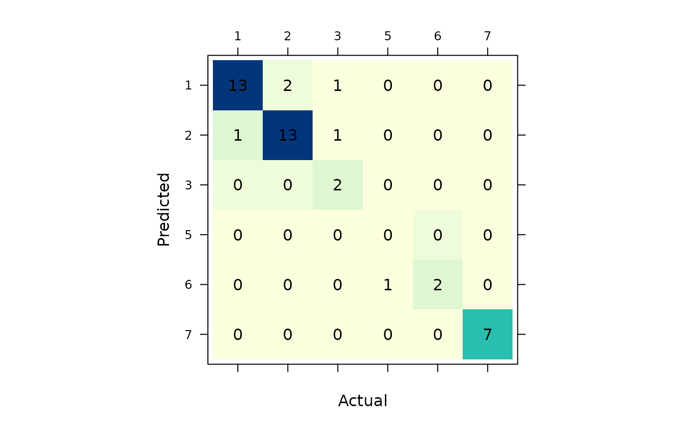
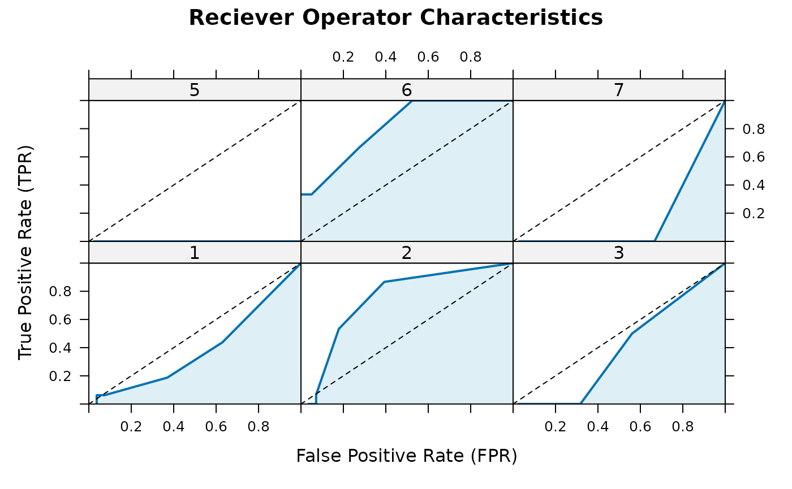

{SLmetrics}: Classification
{SLmetrics} x {lightgbm} in classification problems
classification_problems.RmdIn this vignette, we will demonstrate how to use {SLmetrics} with {lightgbm} for classification problems.
Prerequisite: Familiarity with {lightgbm} and the general AI/ML-workflow is assumed.
We will use the Glass dataset, made available via {mlbench}, as an example throughout this vignette.
Setup
In this section we setup the essential the workflow for using {SLmetrics} with {lightgbm}.
The data
# 1) load data
# from {mlbench}
data("Glass", package = "mlbench")Showcase: speed comparison
# 1.1) define the features
# and outcomes
outcome <- c("Type")
features <- setdiff(x = colnames(Glass), y = outcome)
# 2) split data in training
# and test
# 2.1) set seed for
# for reproducibility
set.seed(1903)
# 2.2) exttract
# indices with a simple
# 80/10 split
index <- sample(1:nrow(Glass), size = 0.8 * nrow(Glass))
# 1.1) extract training
# data and construct
# as lgb.Dataset
train <- Glass[index,]
dtrain <- lightgbm::lgb.Dataset(
data = data.matrix(train[,features]),
label = train$Type
)
# 1.2) extract test
# data
test <- Glass[-index,]
# 1.2.1) extract actual
# values and constuct
# as.factor for {SLmetrics}
# methods
actual <- as.factor(
test$Type
)
# 1.2.2) construct as data.matrix
# for predict method
test <- data.matrix(
test[,features]
)Setting up parameters
# 1) define parameters
# across the vignette
parameters <- list(
objective = "multiclass",
num_leaves = 4L,
learning_rate = 0.5,
num_class = 8
)Evaluation function: F score
As the custom evaluation function we use the \(F_{score}\) with \(\beta = 2\) to emphasize that precision is more imporant than recall. The function is defined as,
\[ f_\beta = (1 + \beta^2) \cdot \frac{precision \cdot recall}{(\beta^2 \cdot precision) + recall} \]
The fbeta()-function returns a vector of scores for each
class. We want to maximize the micro-average.
# 1) define the custom
# evaluation metric
evaluation_metric <- function(
dtrain,
preds) {
# 1) extract values
actual <- as.factor(dtrain)
predicted <- lightgbm::get_field(preds, "label")
value <- fbeta(
actual = actual,
predicted = predicted,
beta = 2,
micro = TRUE
)
# 2) construnct output
# list
list(
name = "fbeta",
value = value,
higher_better = TRUE
)
}Training model
We train the the model using the
lgb.train()-function,
model <- lightgbm::lgb.train(
params = parameters,
data = dtrain,
nrounds = 10L,
eval = evaluation_metric,
verbose = -1
)Performance Evaluation
Classification
We extract the predicted classes using the
predict()-function,
# 1) prediction
# from the model
predicted <- as.factor(
predict(
model,
newdata = test,
type = "class"
)
)
# 1) construct confusion
# matrix
confusion_matrix <- cmatrix(
actual = actual,
predicted = predicted
)
# 2) visualize
plot(
confusion_matrix
)
# 3) summarize
summary(
confusion_matrix
)
#> Confusion Matrix (6 x 6)
#> ================================================================================
#> 1 2 3 5 6 7
#> 1 13 2 1 0 0 0
#> 2 1 13 1 0 0 0
#> 3 0 0 2 0 0 0
#> 5 0 0 0 0 0 0
#> 6 0 0 0 1 2 0
#> 7 0 0 0 0 0 7
#> ================================================================================
#> Overall Statistics (micro average)
#> - Accuracy: 0.86
#> - Balanced Accuracy: 0.87
#> - Sensitivity: 0.86
#> - Specificity: 0.97
#> - Precision: 0.86Response
We extract the response values using the
predict()-function,
# 1) prediction
# from the model
response <- predict(
model,
newdata = test
)The response can be passed into the
ROC()-function,
# 1) calculate the reciever
# operator characteristics
roc <- ROC(
actual = actual,
response = response
)
# 2) print the roc
# object
print(roc)
#> threshold level label fpr tpr
#> 1 3.60e-15 1 1 0.0370 0.0000
#> 2 2.70e-15 1 1 0.0370 0.0625
#> 3 1.46e-15 1 1 0.0741 0.0625
#> 4 1.16e-15 1 1 0.1111 0.0625
#> 5 1.15e-15 1 1 0.1481 0.0625
#> 6 1.12e-15 1 1 0.1852 0.0625
#> 7 1.03e-15 1 1 0.2222 0.0625
#> 8 9.87e-16 1 1 0.2222 0.1250
#> 9 9.45e-16 1 1 0.2593 0.1250
#> 10 9.36e-16 1 1 0.2963 0.1250
#> [ reached 'max' / getOption("max.print") -- omitted 248 rows ]The ROC()-function returns a
data.frame-object, with 258 rows corresponding to the
length of response multiplied with number of
classes in the data. The roc-object can be plotted as
follows,
# 1) plot roc
# object
plot(roc)
The ROC()-function accepts a custom
threshold-argument, which can be passed as follows,
# 1) create custom
# thresholds
thresholds <- seq(
from = min(roc$threshold),
to = max(roc$threshold),
length.out = 10
)
# 2) pass the custom thresholds
# to the ROC()-function
roc <- ROC(
actual = actual,
response = response,
thresholds = thresholds
)
# 3) print the roc
# object
print(roc)
#> threshold level label fpr tpr
#> 1 3.60e-15 1 1 0.0370 0.0000
#> 2 3.20e-15 1 1 0.0370 0.0000
#> 3 2.80e-15 1 1 0.0370 0.0000
#> 4 2.40e-15 1 1 0.0370 0.0625
#> 5 2.01e-15 1 1 0.0370 0.0625
#> 6 1.61e-15 1 1 0.0370 0.0625
#> 7 1.21e-15 1 1 0.0741 0.0625
#> 8 8.11e-16 1 1 0.3704 0.1875
#> 9 4.12e-16 1 1 0.6296 0.4375
#> 10 1.37e-17 1 1 1.0000 1.0000
#> [ reached 'max' / getOption("max.print") -- omitted 50 rows ]The new object has 60 rows.
# 1) viasualize
# ROC
plot(roc)
# 1) summarise ROC
summary(roc)
#> Reciever Operator Characteristics
#> ================================================================================
#> AUC
#> - 1: 0.387
#> - 2: 0.749
#> - 3: 0.39
#> - 5: 0
#> - 6: 0.812
#> - 7: 0.167